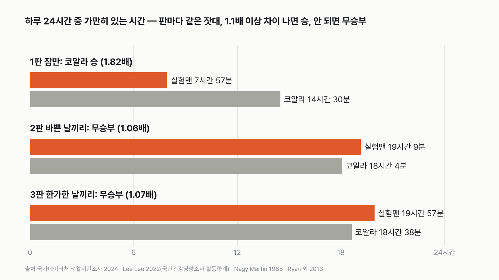
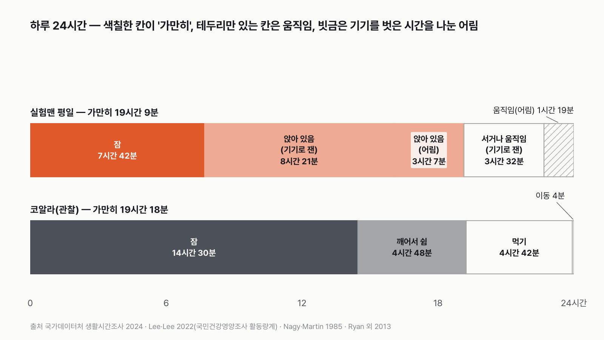
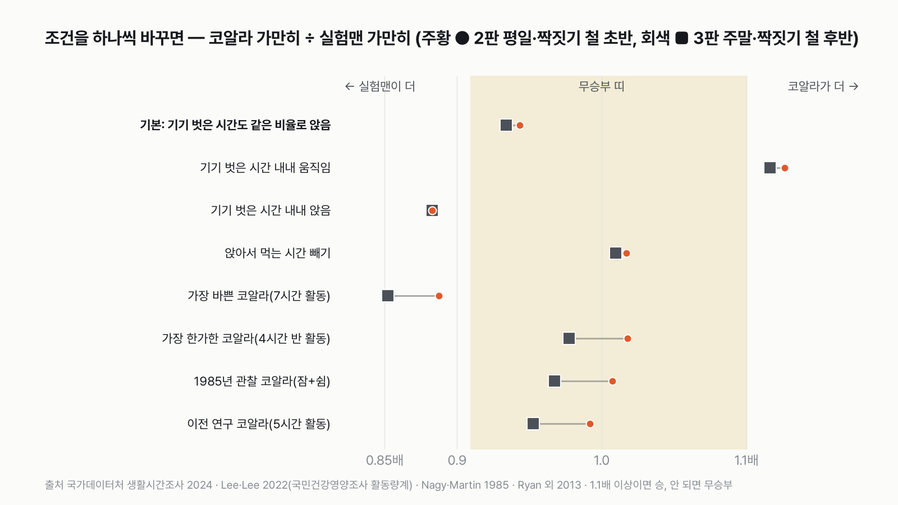

실험맨 vs 코알라, 가만히 있기 세 판 승부는 누가 이길까
잠은 코알라 편, 의자는 실험맨 편이에요. 세 판을 합치면 누가 이길까요?
독자 투표
잠·평일·주말 세 판 승부, 실험맨과 코알라 중 누가 이길까?
- "코알라는 하루 종일 잔다"는 말, 많이 들어 봤을 거예요. 평균 한국인 '실험맨'이 코알라와 '하루 중 가만히 있는 시간'으로 겨뤄요.
- 잠만 보면 코알라가 실험맨의 거의 두 배를 자요. 그런데 실험맨에겐 하루 11시간 넘게 앉아 있는 시간이 있어요.
- 잠만, 바쁜 날끼리, 한가한 날끼리 세 판이에요.
조건과 규칙
- 실험맨은 평균 한국인이에요. 잠은 국가데이터처(옛 통계청) 생활시간조사(2024)에서 19세 이상이 적은 시간, 앉아 있는 시간은 국민건강영양조사에서 성인이 활동량계를 차고 잰 시간을 써요.
- 코알라는 호주 빅토리아주의 야생 코알라예요. 하루를 직접 지켜보며 잰 연구와, 목걸이 기기로 일주일씩 잰 연구를 써요.
- 가만히 있는 시간은 양쪽 다 '잠 + 깨어 있지만 몸을 거의 안 움직이는 시간'이에요.
- 잠만, 바쁜 날끼리(사람 평일·코알라 짝짓기 철 초반), 한가한 날끼리(사람 주말·짝짓기 철 후반) 세 판이에요. 판마다 더 오래 가만히 있는 쪽이 1.1배 이상 길면 승, 안 되면 무승부예요. 승이 많은 쪽이 최종 승자예요.
결과 요약
3판 코알라 1승 2무 → 최종 코알라 승
- 잠 한 판만 이기고도 코알라가 이겼어요. 가만히 있는 시간은 실험맨이 두 판 모두 1시간 넘게 길었지만, 차이가 작아 비겼어요.
- 잠만 보면 코알라 14시간 30분, 실험맨 7시간 57분이에요. 코알라가 1.82배 길어 여유 있게 이겼어요.
- 잠에 앉아 있는 시간까지 더하면 평일 실험맨 19시간 9분 대 코알라 18시간 4분(1.06배), 주말 19시간 57분 대 18시간 38분(1.07배)이에요. 둘 다 1.1배가 안 돼 무승부예요.
그래서? 잠으로는 코알라의 절반 남짓이지만, 앉아 있는 시간까지 세면 실험맨이 짝짓기 철 코알라보다 하루 1시간 넘게 더 가만히 있어요. 코알라를 따라잡은 건 우리 의자예요.
독자 예상 vs 데이터 결과
잠·평일·주말 세 판 승부, 실험맨과 코알라 중 누가 이길까?
데이터로 보면 코알라. 코알라 1승 2무로 코알라 승이에요. 잠 한 판을 1.82배로 이겼고, 나머지 두 판은 1.06배·1.07배로 비겼어요. 가만히 있는 시간 자체는 실험맨이 더 길었어요.


숫자 두 개로 줄이면 이래요. 평일 실험맨은 하루 19시간 9분 가만히 있고, 짝짓기 철이라 바쁜 코알라는 18시간 4분 가만히 있어요. 잠은 코알라의 절반 남짓인데, 하루 11시간 27분 앉아 있는 시간이 그 차이를 다 메우고도 1시간을 남겼어요.
| 판 | 실험맨 | 코알라 | 배수 | 승자 |
|---|---|---|---|---|
| 1판 잠만(일주일 평균) | 7시간 57분 | 14시간 30분 | 1.82배 | 코알라 |
| 2판 바쁜 날끼리(평일 · 짝짓기 철 초반) | 19시간 9분 | 18시간 4분 | 1.06배 | 무승부 |
| 3판 한가한 날끼리(주말 · 짝짓기 철 후반) | 19시간 57분 | 18시간 38분 | 1.07배 | 무승부 |
| 최종 | 3판 코알라 1승 2무 → 코알라 승 |
판마다 긴 쪽 시간을 짧은 쪽으로 나눠 1.1배 이상이면 승, 안 되면 무승부로 쳤어요. 이 규칙과 가정이면 최종 승자는 코알라예요. 2판과 3판은 실험맨 쪽이 더 길지만 1.1배가 안 돼요.
왜 1시간 넘게 길어도 비겼나요
평일 1시간 5분 차이는 코알라 18시간 4분의 6%, 주말 1시간 19분 차이는 코알라 18시간 38분의 7%예요. 실험맨 숫자는 10년 떨어진 두 조사(잠 2024년, 앉아 있는 시간 2014~2015년)를 이어 붙였고, 그중 4시간 반은 기기를 벗은 시간을 나눠 어림한 값이에요. 이 정도 오차를 넘으려면 1.1배 이상 차이 나야 이긴 걸로 쳤어요. 실험맨이 이기려면 지금보다 평일 44분, 주말 33분 더 가만히 있어야 했어요.
1판 잠만: 코알라 승(1.82배)
생활시간조사에서 19세 이상 한국인은 하루 평균 7시간 57분 자요. 1985년 연구진이 야생 코알라를 24시간 지켜본 기록에서 코알라는 14시간 30분 잤어요. 나머지는 먹기 4시간 42분, 깨어서 쉬기 4시간 48분, 나무 사이 이동 4분이었어요. 실험맨이 가장 많이 자는 일요일(8시간 43분)을 데려와도 코알라 잠의 60% 안팎이에요. 나이대별로도 가장 많이 자는 10대(8시간 37분)가 코알라 잠의 59%, 가장 덜 자는 50대(7시간 40분)가 53%라, 어느 나이대도 60%를 넘지 못했어요.
2판 바쁜 날끼리: 무승부(1.06배)
실험맨의 평일은 잠 7시간 42분에 앉아 있는 시간 11시간 27분을 더해 19시간 9분이에요. 앉아 있는 시간은 국민건강영양조사 참가자 1,768명이 몸에 활동량계를 차고 잰 값에서 나왔어요. 기기를 찬 11시간 52분 가운데 8시간 21분(70%)을 앉아 있었고, 기기를 벗은 깨어 있는 4시간 26분에도 같은 비율로 앉아 있었다고 봤어요. 출근길 지하철 좌석, 회사 책상, 저녁 소파를 이어 붙이면 이렇게 하루 11시간이 넘어요. 코알라 쪽은 짝짓기 철 초반, 수컷끼리 다투고 짝을 찾아 가장 바쁠 때예요. 목걸이 기기로 잰 27마리 가운데 이 시기 12마리는 하루 평균 5시간 56분 움직여서, 가만히 있는 시간이 18시간 4분이에요. 실험맨이 1시간 5분 더 길지만 1.06배라 무승부예요.
3판 한가한 날끼리: 무승부(1.07배)
주말 실험맨은 평일보다 50분 넘게 더 자요(8시간 34분). 기기로 잰 앉아 있는 시간은 8시간 8분으로 조금 줄지만, 기기를 찬 시간 중 앉아 있는 비율은 74%로 높아져요. 같은 방식으로 세면 주말 실험맨은 19시간 57분 가만히 있어요. 짝짓기 철 후반의 코알라는 하루 5시간 22분 움직여서 18시간 38분이에요. 실험맨이 1시간 19분 더 길지만 1.07배라 이번에도 무승부예요. 저는 한가한 날이면 코알라가 더 멀리 달아날 줄 알았는데, 실험맨도 주말에 같이 느려졌어요.


하루를 한 줄로 놓으면
실험맨의 평일 24시간은 잠 7시간 42분, 기기로 잰 앉아 있음 8시간 21분, 서 있거나 움직임 3시간 32분이에요. 기기를 벗은 4시간 26분은 같은 비율로 나눠 앉아 있음 3시간 7분, 움직임 1시간 19분으로 어림했어요. 가만히 있는 칸을 다 합하면 19시간 9분이에요. 코알라를 직접 지켜본 1985년 기록(잠 14시간 30분, 깨어서 쉬기 4시간 48분)을 합한 19시간 18분과 10분도 차이 나지 않아요. 눈에 띄는 건 이동이에요. 코알라가 나무 사이를 옮겨 다닌 시간은 하루 4분뿐이었어요. 코알라가 '움직이는' 시간은 대부분 나무 위에서 잎을 뜯어 먹는 시간이에요.
판정이 걸려 있는 가정: 기기를 벗은 4시간 반
사람 기기는 깨어 있는 동안 하루 평균 11시간 52분(평일) 찼어요. 깨어 있는 16시간 18분 가운데 4시간 26분은 기기 밖이에요. 그 시간에 무엇을 했는지는 잰 값이 없어서, 기기를 찬 시간과 같은 비율로 앉아 있었다고 봤어요. 논문 저자들도 기기를 14시간 찼다면 앉아 있는 시간이 평일 9시간 49분이었을 거라고 같은 방식으로 어림했어요. 이 가정을 양 끝으로 밀면 최종 승자가 바뀌어요. 기기를 벗은 4시간 반 내내 움직였다면 코알라가 3판을 다 이겨요(2판 1.13배, 3판 1.12배). 내내 앉아 있었다면 실험맨이 2·3판을 1.13배로 이겨 2승 1패로 실험맨 승이에요. 그 사이 거의 모든 경우는 지금처럼 코알라 1승 2무로 코알라 승이에요.
반대쪽 가정: 앉아서 먹는 시간
코알라 목걸이 기기는 잎을 먹을 때 머리와 앞발이 움직이는 걸 '활동'으로 잡아요. 사람 활동량계는 식탁에 앉아 밥 먹는 시간을 움직임이 적다고 보고 '앉아 있음'으로 잡아요. 이건 실험맨에게 유리한 차이예요. 실험맨 앉아 있는 시간에서 식사 시간(평일 1시간 23분)을 빼면 평일 17시간 46분, 주말 18시간 27분이라 코알라 쪽이 조금 길어지지만 1.02배·1.01배로 여전히 무승부예요. 최종 승자도 코알라 그대로예요.


코알라도 저마다 달라요
목걸이 연구에서 코알라 한 마리가 하루에 움직인 시간은 4시간 30분부터 7시간까지 퍼져 있었어요. 가장 바쁜 코알라(7시간)를 데려오면 가만히 있는 시간이 17시간이라, 실험맨이 2판 1.13배·3판 1.17배로 이겨 2승 1패로 실험맨 승이에요. 가장 한가한 코알라(4시간 30분)라면 19시간 30분이라 무승부, 최종은 코알라 승이에요. 이 연구는 코알라가 1헥타르에 12마리 넘게 사는 아주 붐비는 숲에서, 그것도 짝짓기 철에 쟀어요. 연구진도 이전 연구들(하루 활동 3시간 36분~5시간)보다 많이 움직인 쪽이라고 적었어요. 이전 연구의 상한 5시간을 쓰거나 1985년 관찰값(19시간 18분)을 써도 2판과 3판은 무승부예요.
덤: 실험맨이 가만히 있는 시간 vs 코알라가 자는 시간
일주일을 평균 내면 실험맨이 하루 가만히 있는 시간은 19시간 23분이에요. 코알라가 자는 시간 14시간 30분보다 4시간 53분 길어요. 실험맨은 잠에 앉아 있는 시간을 더한 값이고 코알라는 잠만이라 공정한 비교는 아니에요. 그래도 "코알라가 자는 것보다 오래 가만히 있다"는 말은 실험맨에게 맞는 말이에요.
하루 11시간 넘게 앉아 있는 사람에게, 하루 4분만 이동하는 코알라는 생각보다 가까운 이웃이에요.
이 숫자는 어디서 왔나요
출처
기준일 사람 잠은 2024년 생활시간조사(2026년 11월 9일 KOSIS에서 받음), 앉아 있는 시간은 2014~2015년 측정이에요. 조건은 2026년 11월 9일, 계산하기 전에 정했고, 같은 날 검토 뒤 기본 가정 하나를 바꿨어요.
국가데이터처(옛 통계청)생활시간조사
- 생활시간조사 연령대별 평균시간KOSIS DT_1TS202004원본 보기
19세 이상 요일별 잠·식사 시간, 나이대별 잠
Lee·Lee 2022,Frontiers in Public Health
- 앉아 있는 시간 활동량계 측정doi:10.3389/fpubh.2022.846542원본 보기
국민건강영양조사 2014~2015, 평일 500.63분·주말 488.10분, 착용 시간
Nagy·Martin 1985,Australian Journal of Zoology
- 코알라 시간 배분doi:10.1071/ZO9850655원본 보기
잠 14.5시간·깨어서 쉼 4.8시간·먹기 4.7시간·이동 4분
Ryan 외 2013,PLoS ONE
- 코알라 가속도계 활동doi:10.1371/journal.pone.0080366원본 보기
27마리, 짝짓기 철 초반·후반 하루 활동 시간, 개체별 4.5~7시간
어떻게 셌나요
- 실험맨 잠: 국가데이터처(옛 통계청) 생활시간조사 2024, 연령대별 평균시간, 19세 이상, 남녀 합, '수면' 행동이에요. 평일, 토요일, 일요일, 일주일 평균 값이 따로 있어요. 주말은 토요일과 일요일의 평균이에요.
- 실험맨 앉아 있는 시간: Lee·Lee 2022 논문이 국민건강영양조사 2014~2015 활동량계(ActiGraph GT3X+) 참가자(19~65세 1,768명)의 하루 앉아 있는 시간을 낸 값이에요. 1분 동안 움직임이 99카운트 이하이면 '앉아 있음'으로 쳤어요. 평일 500.63분, 주말 488.10분이에요. 기기를 하루 10시간 넘게 찬 날만 썼고, 평균 착용 시간은 평일 11.87시간, 주말 11.03시간이에요. 깨어 있는 시간(24시간 − 잠) 가운데 기기를 벗은 시간에도 찬 시간과 같은 비율(평일 70.3%, 주말 73.8%)로 앉아 있었다고 봤어요.
- 코알라 잠(1판): Nagy·Martin 1985가 빅토리아주 야생 코알라를 24시간 지켜본 시간 배분, 잠 14.5시간이에요.
- 코알라 가만히 있는 시간(2·3판): Ryan 외 2013이 케이프 오트웨이의 야생 성체 27마리에 목걸이 가속도계를 7일씩 채워 잰 하루 활동 시간(먹기·이동·털 고르기)을 24시간에서 뺐어요. 짝짓기 철 초반(2010년 11월) 수컷 360분·암컷 351분, 후반(2011년 1월) 수컷 330분·암컷 314분의 수컷·암컷 평균을 썼어요.
- 판정: 판마다 긴 쪽 ÷ 짧은 쪽이 1.1배 이상이면 승, 안 되면 무승부예요. 3판 가운데 승이 많은 쪽이 최종 승자이고, 승 수가 같으면 무승부예요.
- 기기를 벗은 시간의 경계: 그 시간 가운데 앉아 있던 비율이 평일 8.8%, 주말 5.6%보다 낮으면 그 판은 코알라 승, 평일 86.7%, 주말 86.2%보다 높으면 실험맨 승이에요. 평일과 주말에 같은 비율을 넣어 최종 판정을 보면, 0~86.2%는 코알라 승, 86.3~86.6%는 무승부(1승 1무 1패), 86.7% 이상은 실험맨 승이에요.
| 항목 | 값 | 잰 것 / 가정 |
|---|---|---|
| 사람 잠(19세 이상, 2024) | 평일 7시간 42분 · 주말 8시간 34분 | 잰 것(일지) |
| 사람 앉아 있는 시간(19~65세, 2014~2015) | 평일 8시간 21분 · 주말 8시간 8분 | 잰 것(활동량계) |
| 사람이 기기를 벗은 깨어 있는 시간 | 평일 4시간 26분 · 주말 4시간 25분 | 찬 시간과 같은 비율로 앉았다고 봄(가정, 양 끝은 점수 밖) |
| 코알라 잠(관찰) | 14시간 30분 | 잰 것(1985) |
| 코알라 하루 활동 | 짝짓기 철 초반 5시간 56분 · 후반 5시간 22분 | 잰 것(가속도계, 2010~2011) |
| 앉아서 먹는 시간 | 사람은 '앉아 있음', 코알라는 '활동'으로 잡힘 | 기기 차이(점수 밖 계산) |
한계 6가지
이 데이터로 말할 수 없는 것
- 사람 잠(2024)과 앉아 있는 시간(2014~2015)은 10년 떨어진 두 조사예요. 코알라 자료는 1985년과 2010~2011년이에요.
- 사람 잠은 스스로 적은 일지, 앉아 있는 시간과 코알라 활동은 기기로 잰 값이에요. 코알라 1판 잠은 연구진이 직접 지켜본 값이에요.
- 사람 기기는 깨어 있는 동안 평균 12시간 남짓만 찼어요. 기기를 벗은 시간에 얼마나 앉아 있었는지는 몰라요. 이 계산은 찬 시간과 같은 비율로 봤어요. 씻고 옷 입는 아침 시간처럼 기기를 벗는 시간은 덜 앉아 있을 수도, 저녁 소파 시간처럼 더 앉아 있을 수도 있어요.
- 사람 기기는 앉아서 먹는 시간을 '앉아 있음'으로, 코알라 기기는 먹는 시간을 '활동'으로 잡아요. 실험맨에게 유리한 차이예요.
- 1985년 관찰은 코알라 네 마리의 24시간 기록이고, 2013년 목걸이 연구는 아주 붐비는 숲에서 짝짓기 철에만 잰 값이에요. 다른 철, 다른 숲의 코알라는 덜 움직일 수 있어요.
- 사람 쪽은 19세 이상(잠)과 19~65세(앉아 있는 시간)로 나이 범위가 조금 달라요.
다음 대결
대결 다 보기실험맨 vs 고양이 그루밍
실험맨 vs 고양이, 세 판 승부로 하루 씻고 꾸미는 시간이 더 긴 쪽은 누굴까?
A실험맨vsB고양이
투표하러 가기
대결실험맨투표했어요기린 승고3 vs 기린
고3 실험맨과 기린, 하루에 누가 더 적게 잘까?
A고3vsB기린
투표하러 가기
대결실험맨투표했어요60세 이상 승60세 이상 vs 20대
60세 이상 여성 실험맨과 20대 여성 실험맨, 하루 사람을 만나 어울리는 시간은 누가 더 길까?
A60세 이상 여성vsB20대 여성
투표하러 가기
대결실험맨투표했어요결과: 절반 넘는다실험맨 vs 혼밥
50대 남성 실험맨, 저녁을 대체로 가족과 함께 먹는 사람이 100명 중 절반을 넘을까?
A절반 넘는다vsB절반 못 넘는다
투표하러 가기
대결실험맨투표했어요결과: A실험맨 vs 월세
서울에 혼자 사는 20대 여성 실험맨, 작은 오피스텔 월세가 월급의 3분의 1을 넘을까?
A3분의 1 못 넘는다vsB3분의 1 넘는다
투표하러 가기
대결실험맨투표했어요결과: B실험맨 vs 결혼식
30대 신혼부부 실험맨, 둘이 석 달 번 돈으로 결혼식 하루 비용을 낼 수 있을까?
A석 달이면 낸다vsB석 달로는 모자란다
투표하러 가기
대결실험맨투표했어요결과: B실험맨 vs 집안일
30대 여성 실험맨의 1년 집안일, 돈으로 바꾸면 1년 번 돈보다 클까?
A집안일 값이 더 크다vsB번 돈이 더 크다
투표하러 가기
대결실험맨투표했어요무승부실험맨 vs 등록금
20대 여성 실험맨이 1년 동안 영상·SNS 보는 시간, 최저시급으로 치면 대학 1년 등록금을 넘을까?
A넘는다vsB못 넘는다
투표하러 가기
새 글 나오면 받아 보기
피드 리더 앱에 이 사이트 주소를 한 번 넣어 두면, 새 글이 올라올 때 앱에 떠요. 가입이나 메일 주소는 필요 없어요.
받는 법 보기
- 피드 리더 앱을 하나 골라요. 새 글을 모아 보여 주는 앱이에요. 예를 들면 Feedly나 Inoreader가 있어요. 둘 다 무료고 웹·휴대폰에서 써요.
- 앱에서 '구독 추가'(+)를 누르고 아래 주소를 붙여 넣어요.
- 끝이에요. 새 글이 올라오면 앱 목록에 떠요.
https://protofu.github.io/opendata-insight/feed.xmlFeedly를 쓴다면 여기를 눌러 바로 추가할 수도 있어요.